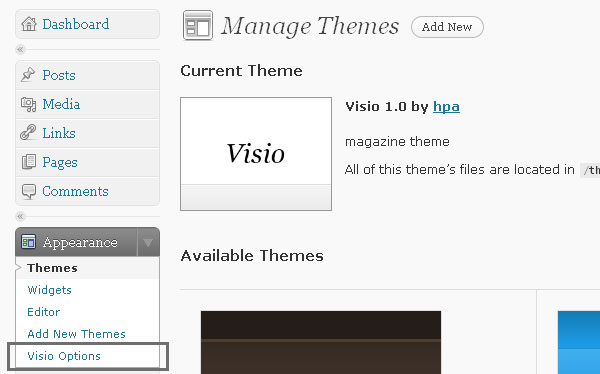
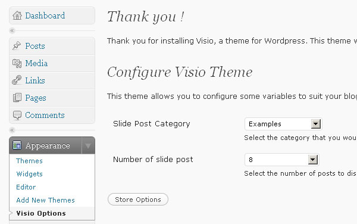

Upload "Visio" folder to themes directory (/wp-content/themes/)
Upload plugin on "plugins" folder to plugins directory (/wp-content/plugins/) and activated
After Install the theme, go to "Visio Options" (Appearance -> Visio Options)
And than, you can see Visio Options

If you want add image on "sliding image", don't forget or "Costum Fields" when you create post
put "thumbnail" for name and image path (URL) for value.
For best resolution (image) use "201px * 157px"